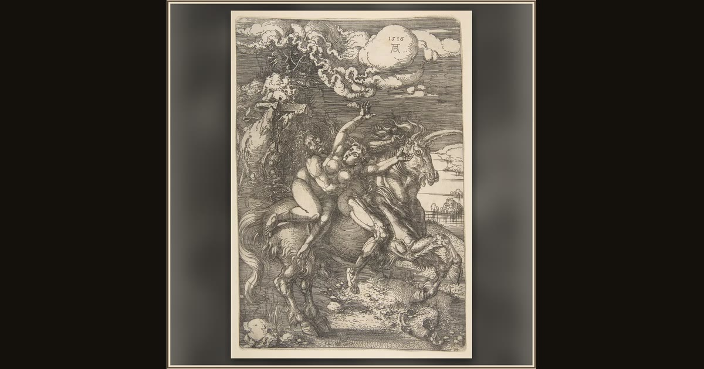

Abduction of Proserpine
Albrecht Dürer · 1516 · met
Dürer's etching shows a rider carrying off a bare woman on a rearing beast, echoing the lord of the dead who bursts from the earth and seizes Persephone (17–19) Explore its place in Homer's The Homeric Hymns, Hymn 2 · To Demeter, line 17.